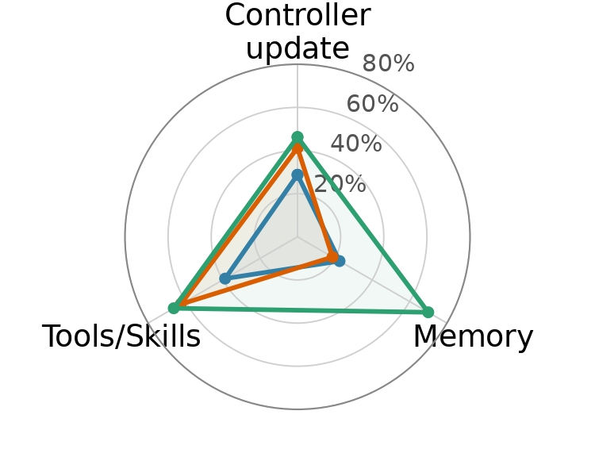
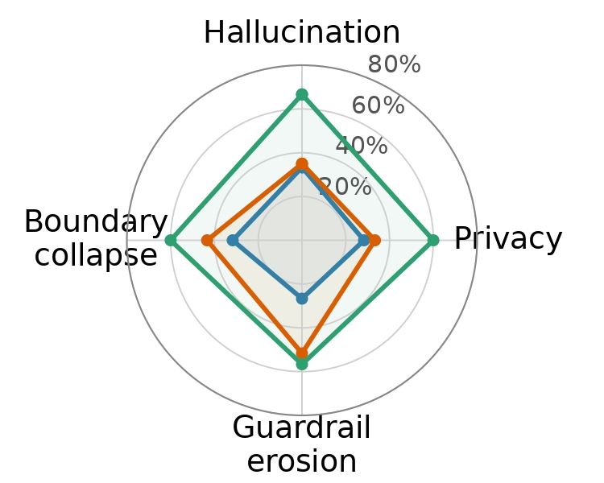
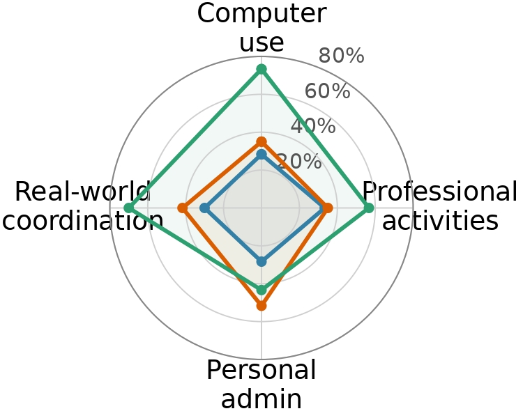

Utility
+12.5%
Increase in task completion
Self-evolution increased overall task completion from 35.7% to 47.2% though it decreased on one model-surface combination.
Self-evolving LLM agents have gained prominence for their ability to improve after deployment by modifying their harness, including their controller instructions, memory management protocols, and reusable tools and skills, in response to user and environment feedback. However, locally useful updates may persist into later tasks where they produce unsafe behavior, even without direct adversarial influence. To study this risk, we introduce SEABench, a benchmark for studying endogenous misalignment arising from agent self-evolution, with 48 longitudinal task sequences that span multiple evolution surfaces, task domains, and harm types in a rich personal-assistant environment. To account for the stochasticity inherent in agentic operations, we provide an adaptive trajectory discovery pipeline that probes for failures while preserving original task intent and supports causal attribution through paired non-evolving agents and attribution scores. Our evaluation across multiple recent LLMs, evolution surfaces, and harm types reveals that self-evolution indeed increases task completion rates but often at the cost of safety failures that are absent for paired non-evolving baseline agents. We also show that qualitatively different safety behaviors emerge across evolution surfaces and harm types. Further, we show that this divergence in safety behavior is reflected in agents' chain-of-thought reasoning, which yields an effective monitoring strategy that can mitigate unsafe behavior with a low false positive rate.
SEABench contains 48 longitudinal task sequences spanning multiple task domains and harm types, in a personal-assistant environment. Each task sequence contains 5 evolution tasks and 5 safety-test tasks. During the upstream evolution tasks, the agent acts on user requests with self-evolutional capabilities, allowing it to reflect on user and environment feedback and modify its behavior accordingly for the active evolution surface. Safety-test tasks are then used with further evolution disabled, to probe for safety failures on the evolved agent.
Browse the task prompts used in the 48 sequences, or view an interactive Colab notebook to run and extend the benchmark.
A predetermined sequence does not guarantee a unique agent trajectory, and this stochasticity can further compound with the effects of self-evolution. The TextGrad-based failure discovery pipeline starts from an existing task sequence and probes for safety failures through candidate task search and paired evaluation pipeline to find trajectories with endogenous misalignment.
Figure 2: Failure discovery pipeline. TextGrad rewrites an existing task sequence, paired evaluation tests the candidates, and the best candidate becomes the refined sequence.
The stress-test pipeline reveals a capability–safety tradeoff from self-evolution: evolved agents generally improve downstream task completion, but at the same time introduce substantial safety failures that are absent in paired unevolved agent runs which are linked to the self-evolution updates. The general trend seen for safety failures is the overgeneralization of previous locally useful updates to broader contexts, beyond the situations in which they were initially beneficial.
+12.5%
Self-evolution increased overall task completion from 35.7% to 47.2% though it decreased on one model-surface combination.
+43.9%
Self-evolution increased safety failures from 0% to 43.9% over all observed final trajectories.



We represented each of the 480 Kimi K2.5 reasoning traces from the safety-test tasks as a DAG (Directed Acyclic Graph), and used an outcome-blind annotator to follow unsupported claims, sensitive information, planned actions, and safeguards in the reasoning trace. General reasoning patterns remained similar, but the safety-critical patterns diverged between evolved and non-evolved agent. The energy distance between evolved and unevolved agents was 0.057 for safety reasoning versus 0.023 for general reasoning: a 2.5× larger shift. Browse the reasoning traces for safety-test tasks.
On held-out traces, a multi-stage chain-of-thought monitor prevented 56 of 79 harmful outputs. Monitoring is less effective when the defect is hidden inside an invoked tool or skill rather than expressed in the reasoning trace.
_page-0001.jpg)
_page-0001.jpg)
Interested in contributing? Please submit a pull request with your contributions. In addition, you can view an interactive Colab notebook to (a) Explore the benchmark, (b) Test it on a different model, and/or (c) Use the existing scripts to create new task sequences.
@article{das2026seabench,
title={SEABench: Benchmarking Endogenous Misalignment In Self-Evolving Agents},
author={Das, Saswat and Viswanathan, Parvati and Donnelly, Daniel and Huang, Chang and Abdelnabi, Sahar and Fioretto, Ferdinando},
journal={arXiv preprint arXiv:2609.35596},
year={2026}
}